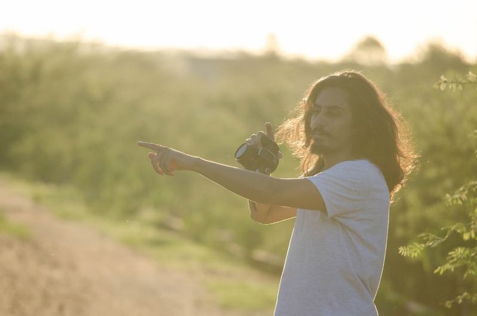
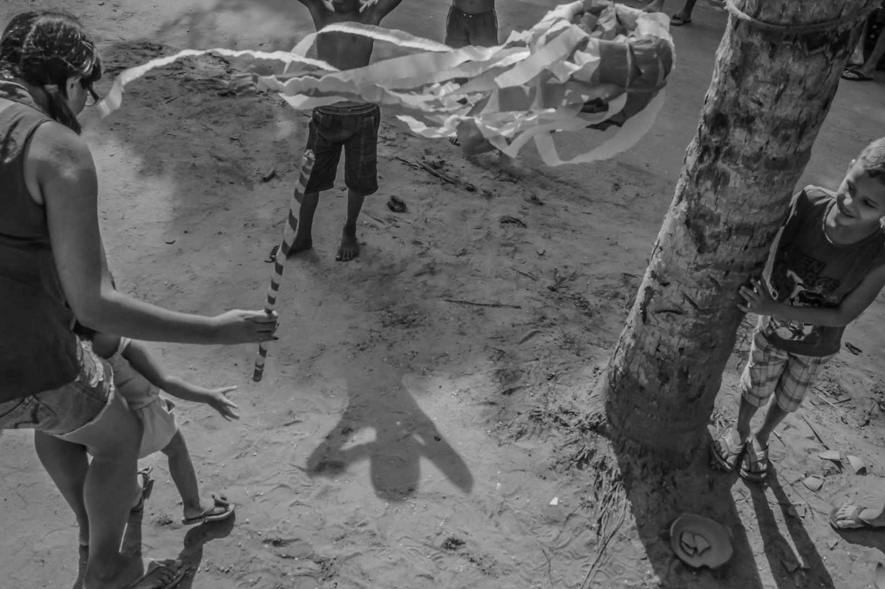
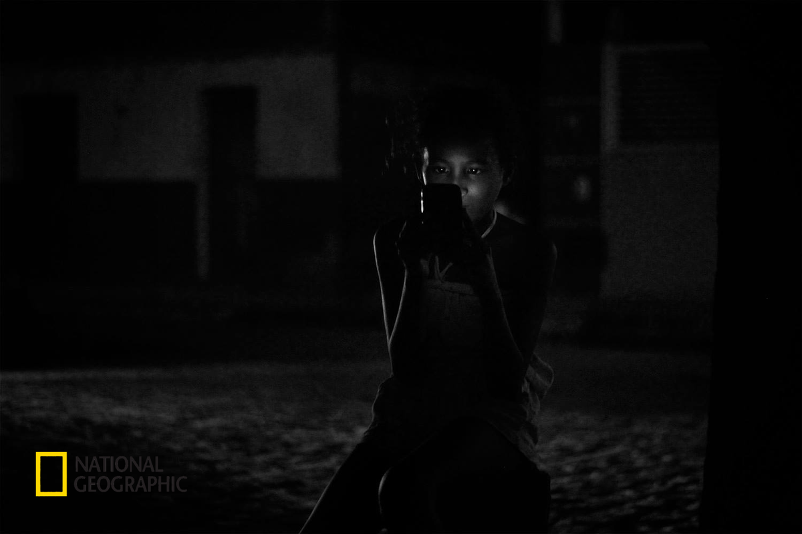
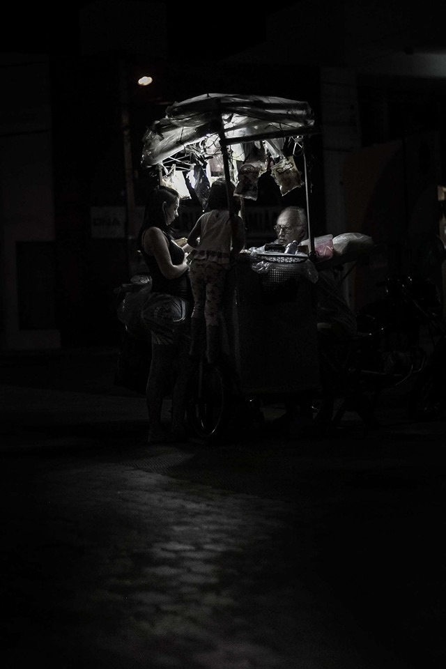
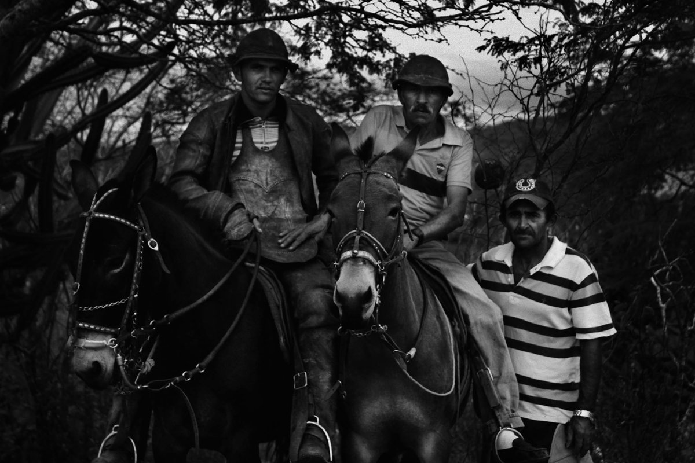
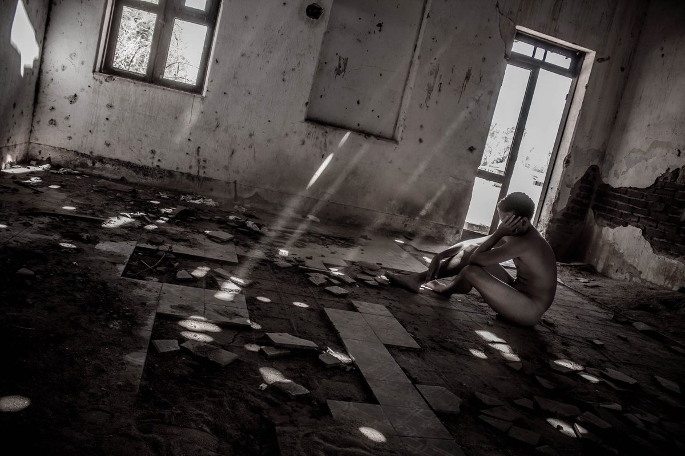
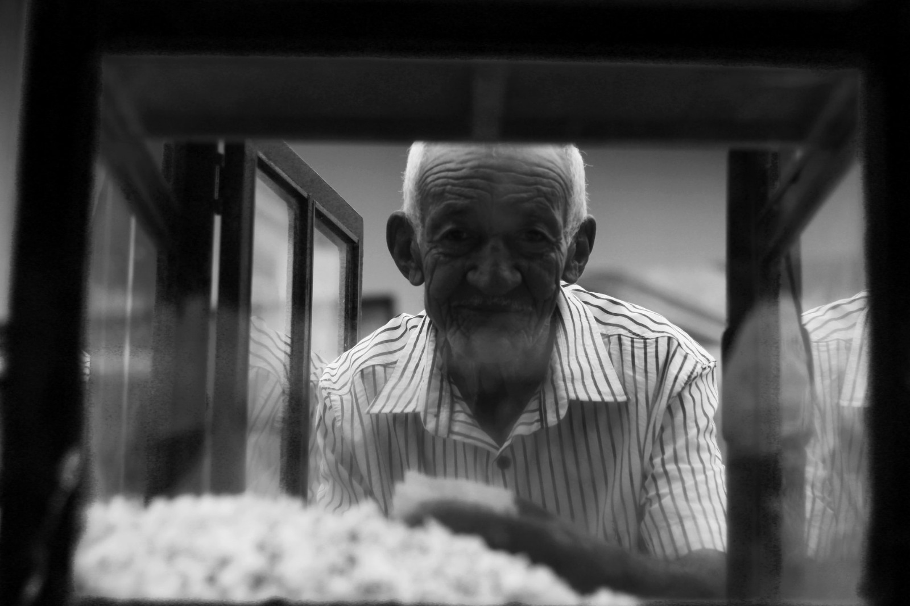

Perceber a luz e entender como ela transforma completamente uma fotografia.

Sobre o autor
Alex Macedo é fotógrafo documentarista e produtor audiovisual, com mais de 10 anos de experiência. Seu trabalho já recebeu reconhecimento internacional, incluindo premiação pela National Geographic. Através do curso, compartilha não apenas técnica, mas a forma de observar, perceber a luz e encontrar significado nas cenas mais simples do dia a dia.
- 10+ anos de experiência
- Documental fotografia e audiovisual
- National Geographic reconhecimento internacional
Daltonismo e fotografia
O olhar antes da técnica.
“Sou daltônico, e durante muito tempo achei que isso seria um obstáculo para fotografar.
Mas foi justamente essa característica que me levou a prestar mais atenção à luz, às formas, aos contrastes e aos momentos.
Hoje, o daltonismo não é uma limitação no meu trabalho. Ele faz parte da minha maneira de enxergar e interpretar a realidade através da fotografia.”
— Alex Macedo

Reconhecimento internacional
Premiado pela National Geographic.
Em 2015, uma fotografia da série Vidas Cinzas foi destaque no concurso semanal da National Geographic e exposta na mídia digital da revista. Um reconhecimento que veio do olhar documental construído no sertão — e que hoje sustenta cada aula do curso.

Portfólio
Um olhar além da imagem.
A fotografia está nos grandes momentos, mas também naqueles pequenos instantes que acontecem diante de nós todos os dias.
Um gesto, um olhar, uma luz, um encontro, uma despedida, uma cena simples que, por um instante, revela algo especial.




O que você vai aprender
Técnica e olhar, juntos.
Aqui, você vai aprender a observar a luz, perceber detalhes, construir composições e transformar momentos simples em imagens com mais intenção, identidade e significado.
Desenvolver um olhar mais atento para criar enquadramentos com identidade e significado.
Aprender e utilizar os 5 pilares da fotografia para assumir o controle da sua câmera com confiança.
Criar composições fotográficas com mais intenção, equilíbrio e beleza.
Compreender a relação entre luz, forma e emoção na construção de uma imagem.
Aplicar os fundamentos técnicos da fotografia de maneira simples, prática e criativa.
Conteúdo do curso
Os 11 módulos, do primeiro clique ao olhar autoral.
Uma jornada que começa pela filosofia da fotografia, passa pelos fundamentos técnicos e chega à luz, à composição e ao olhar.
Bem-vindo ao Fotografia Além da Imagem
Apresentação do curso e da filosofia que guia todo o aprendizado. Antes de falar sobre câmeras e configurações, entender o que realmente faz uma fotografia ter significado.
Pilar 1 — O Diafragma e o Controle da Luz
Entender como o diafragma controla a entrada de luz na câmera e influencia a profundidade de campo. Um dos fundamentos mais importantes para criar imagens com intenção e direcionar o olhar do observador.
Pilar 2 — O Obturador e o Controle do Movimento
Aprender como a velocidade do obturador afeta as fotografias e descobrir como congelar movimentos ou criar efeitos criativos através do controle do tempo de exposição.
Pilar 3 — ISO e a Sensibilidade à Luz
Compreender como o ISO afeta a sensibilidade do sensor à luz e como utilizá-lo corretamente em diferentes condições de iluminação. Equilibrar exposição e qualidade de imagem.
Controlando a Câmera, Libertando o Olhar
Utilizar diafragma, obturador e ISO em conjunto. Quando os três pilares trabalham em harmonia, a câmera deixa de ser uma barreira e passa a ser uma extensão do olhar.
Pilar 4 — A Arte de Compor e Enquadrar
Aprender como enquadramento e composição trabalham juntos para transformar cenas comuns em fotografias mais fortes e interessantes.
Pilar 5 — Aprendendo a Enxergar a Luz
A luz é um dos elementos mais importantes da fotografia. Observar diferentes tipos de luz e compreender como influenciam a atmosfera, as emoções e a forma como uma imagem é percebida.
A Medida da Luz
Compreender como a luz se comporta e utilizar o fotômetro para medir a luz da cena.
Enxergando o Mundo Através das Lentes
Cada lente revela o mundo de uma maneira diferente. Aprender como as diferentes distâncias focais influenciam a perspectiva, o enquadramento e a sensação transmitida pela fotografia.
Módulo Extra — Pequenos Detalhes, Grandes Fotografias
Dicas práticas e orientações: cuidados com a câmera, maneiras de evitar erros comuns e pequenas ações que podem fazer grande diferença nas fotografias.
E-book Fotografando com a Luz do Sol
Material complementar sobre fotografia com luz solar.
O que está incluso
Tudo o que você precisa para começar.
- 11 módulos em vídeo
- 1 hora de conteúdo
- Certificado digital
- Garantia incondicional de 7 dias
- Acesso vitalício
Investimento
A transformação do seu olhar começa aqui.
De R$ 347,00
58% OFF
R$ 145,00
Você economiza R$ 202,00
11 módulos · 1h de vídeo · acesso vitalício · certificado incluso
Quero me inscreverGarantia incondicional de 7 dias · Pagamento seguro pela Hotmart
Para quem é o curso?
Para fotógrafos amadores e iniciantes que querem desenvolver identidade visual e um olhar autoral, mesmo sem experiência avançada.
Preciso de equipamento caro?
Não. O curso ensina técnica e olhar; você pode começar com a câmera que tem — inclusive o celular.
Como acesso o conteúdo?
Após a confirmação da compra, você recebe por e-mail o acesso à área de membros da Hotmart. O acesso é vitalício — você pode rever o conteúdo sempre que quiser.
E se eu não gostar?
Você tem 7 dias de garantia incondicional. Basta solicitar o reembolso dentro do prazo.
Quais são as formas de pagamento?
Cartão de crédito, Pix, boleto e PayPal, conforme as opções disponíveis no checkout da Hotmart.